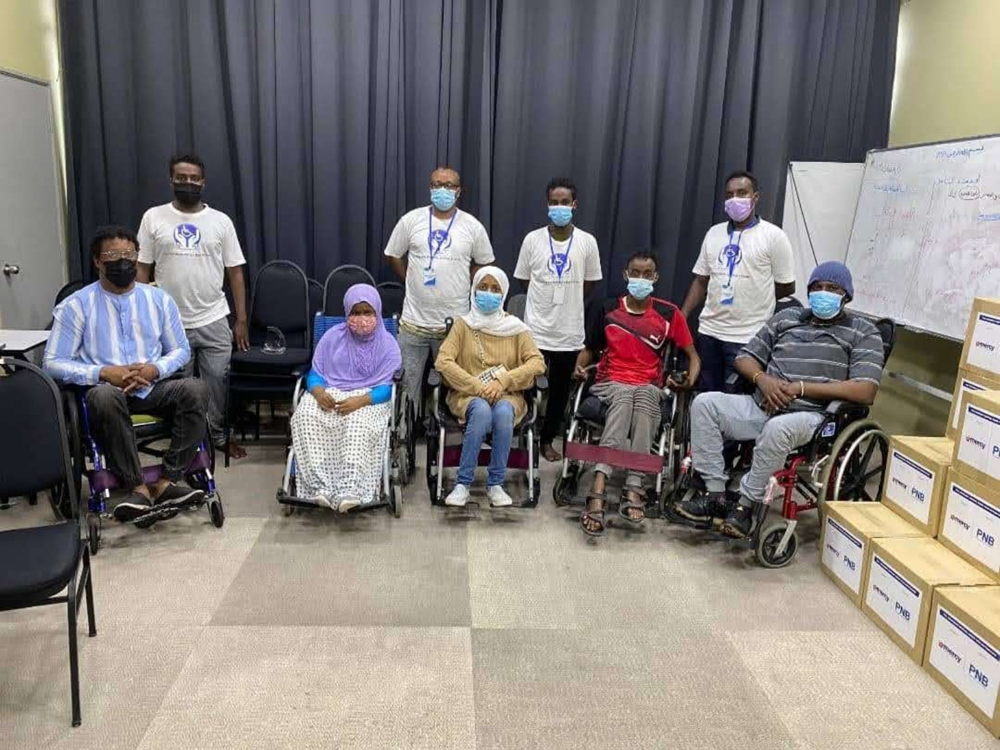
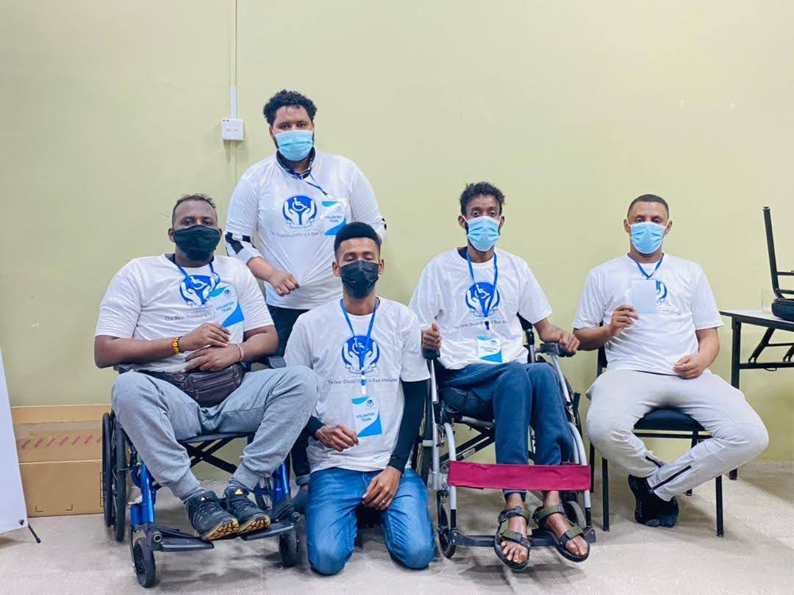
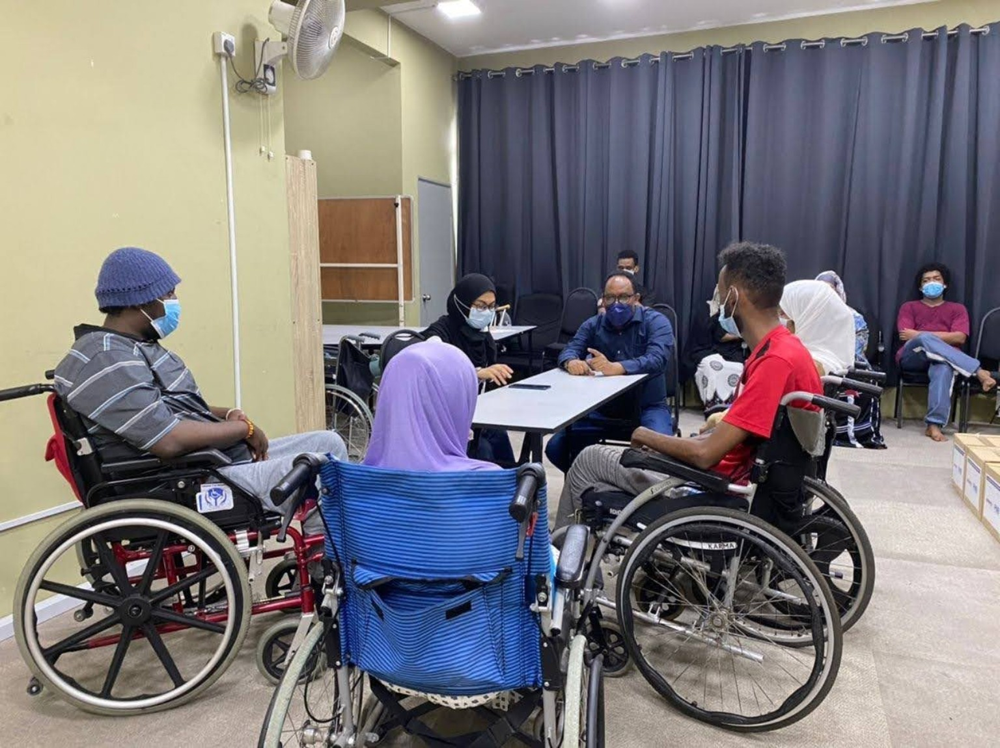
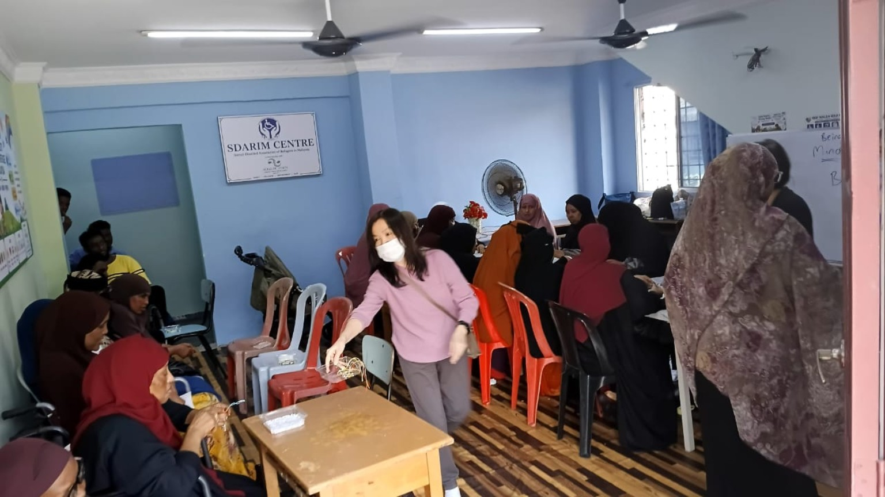
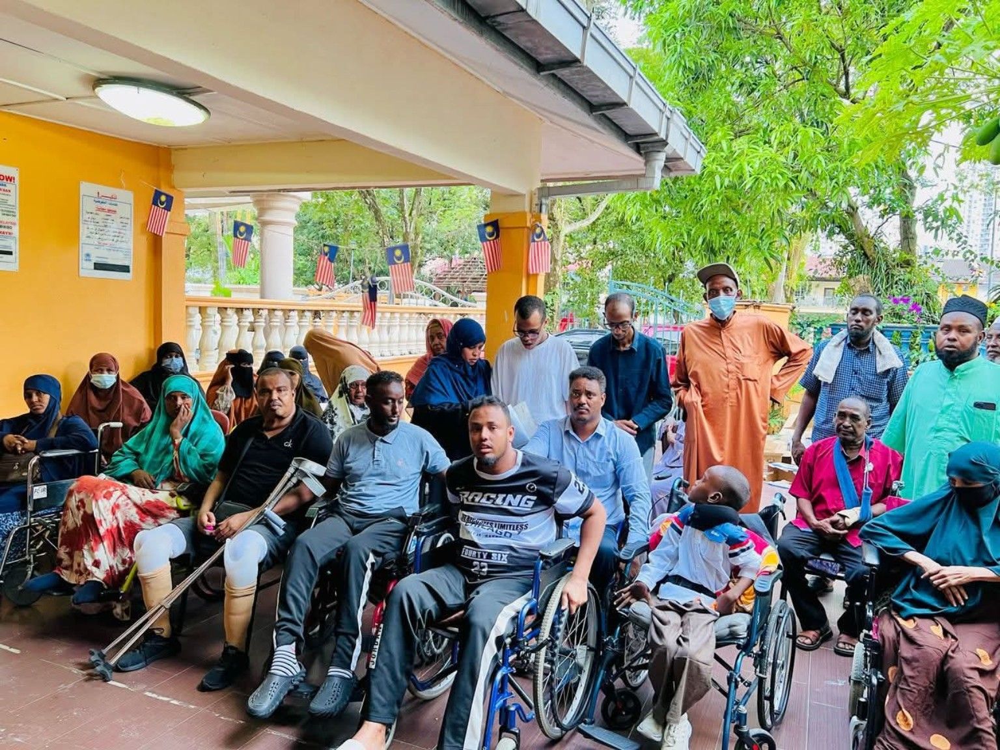

Learning opportunities
English learning, early learning activities, and support for children and adults.
“Naafonimadu ma aha jirka, waa dabeecad xun.”
Disability is not the body; it is a bad attitude.
SDARIM works to help refugees with disabilities, children with autism, and their families access support, learning opportunities, care, and community inclusion.

Somali Disability Association Refugee in Malaysia (SDARIM) is a community-led, non-profit initiative focused specifically on refugees with disabilities and their families.
We work to raise awareness, connect families with support, promote access to education and care, and make sure refugees with disabilities are not overlooked.
We believe every person deserves dignity, respect, access, and the opportunity to participate in community life.
Our activities respond to the needs of refugees with disabilities and their families.
English learning, early learning activities, and support for children and adults.
Awareness, family guidance, and activities for children with autism and their caregivers.
Connecting families with information, protection support, and relevant services.
SDARIM was founded in July 2020 by Abdirahman Mohamud Barkhadle, a Somali refugee with a disability who saw that refugees with disabilities were often overlooked and faced barriers to support and inclusion.
He established SDARIM to advocate for refugees with disabilities, raise awareness of their needs, and help families seek access to learning, care, protection, and community support.
SDARIM’s work is rooted in the belief that disability should never mean exclusion.

A glimpse of our community and activities.



Please ensure you have permission to publish identifiable photos, especially photos of children.
Partnerships and practical support can help refugees with disabilities and their families access opportunities and care.
For collaboration, volunteering, referrals, or support enquiries, contact our team.
Advocacy and community support for refugees with disabilities in Malaysia.
We welcome respectful collaboration that supports dignity, access, and inclusion.
SDARIM supports children with autism and other developmental disabilities through learning activities, family guidance, and community support.